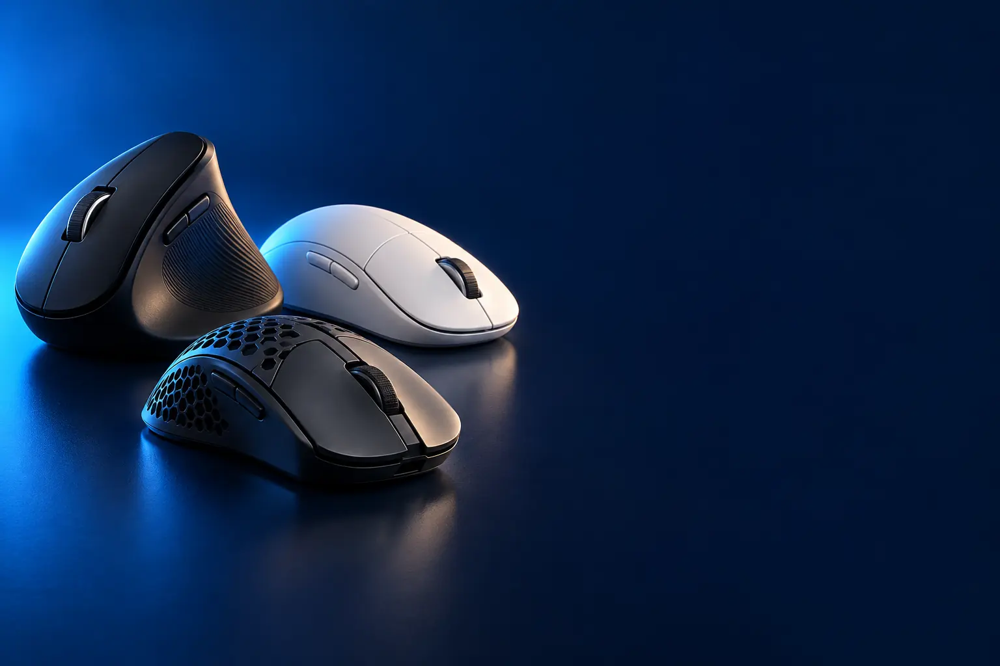

TRABALHO E ESCRITÓRIO
Melhor mouse para trabalho e escritório
Planilha, e-mail e sistema o dia inteiro. Conforto, silêncio e pilha que você esquece que existe.

Melhor custo-benefício para trabalhoLogitech M170
CURADORIA TECHAPROVADO · 2026
Trabalho, notebook, jogo ou dor no punho: cada rotina pede um mouse diferente. Separamos 24 modelos em 4 perfis, do custo-benefício ao top de linha, e dizemos para quem cada um vale a pena.

NOSSA LEITURA
A maioria das pessoas gasta mais do que precisa ou economiza no lugar errado. Descubra seu perfil primeiro; o modelo vem depois. E não, mais DPI não é sinônimo de mouse melhor.
COMECE POR AQUI
TRABALHO E ESCRITÓRIO
Planilha, e-mail e sistema o dia inteiro. Conforto, silêncio e pilha que você esquece que existe.
NOTEBOOK E BLUETOOTH
Leve na mochila, sem ocupar a única porta USB e pronto para trocar entre notebook e tablet.

GAMER
Sensor, peso e latência decidem o jogo, não o RGB. Do primeiro mouse gamer ao dos profissionais.

ERGONÔMICO E VERTICAL
Se o punho reclama no fim do dia, o formato importa mais que qualquer recurso da ficha.

A FICHA, TRADUZIDA
01 - CONEXÃO
Um mouse sem fio fala com o computador de dois jeitos. O receptor USB é um "pendrive" pequeno que vem na caixa: você espeta e ele funciona na hora, mas ocupa uma porta. O Bluetooth usa o rádio que já existe no notebook, no tablet e no celular, sem ocupar porta nenhuma.
Na prática: no computador de mesa, o receptor costuma ser mais estável e não pede pareamento. No notebook com poucas portas, o Bluetooth deixa a USB livre para outras coisas. Vários modelos aceitam os dois jeitos e ainda trocam entre até 3 aparelhos com um botão (na Logitech, o nome é Easy-Switch).
Para jogo existe um terceiro tipo: conexões próprias, como a LIGHTSPEED da Logitech, que respondem em 1 milissegundo, tão rápido quanto um mouse com fio. O Bluetooth comum é mais lento e não é indicado para jogo competitivo. E o mouse com fio continua sendo o mais barato e o único que nunca descarrega.
02 - SENSOR E DPI
DPI quer dizer "pontos por polegada" e mede a sensibilidade: quanto o cursor anda na tela quando você move o mouse uma polegada (2,5 cm) na mesa. Com 1.000 DPI, ele anda 1.000 pontos; com 4.000, anda quatro vezes mais com o mesmo gesto. É sensibilidade, não qualidade.
Para trabalho num monitor comum, de 1.000 a 1.600 DPI sobram. DPI mais alto ajuda em monitor grande, 4K ou em duas telas, para não ter que arrastar o mouse pela mesa toda. Quase todos os bons mouses deixam ajustar o DPI por um botão ou pelo programa da marca.
No jogo, o que conta é o sensor seguir o movimento sem erro, o peso do mouse e a taxa de resposta (polling rate, em Hz: quantas vezes por segundo o mouse avisa o computador onde está; 1.000 Hz é o padrão gamer). Um mouse de 25.000 DPI não joga melhor que um de 8.000 só pelo número: em jogos de tiro, é comum usar entre 400 e 1.600 DPI.
03 - FORMATO
O formato decide se a mão continua confortável depois de horas. Ambidestro serve para destro e canhoto. Destro tem curvas que apoiam a mão direita. Slim é fino, para levar na bolsa. Vertical deixa a mão de lado, como num aperto de mão. Trackball fica parado na mesa e você move só a bola, com o polegar.
O tamanho importa tanto quanto o tipo. Mão grande num mouse pequeno fica "em garra" e cansa; mão pequena num mouse grande não alcança os botões laterais. Alguns modelos avisam na ficha, como o Signature M650 L, feito para mãos grandes.
Se o punho reclama no fim do dia, vale olhar o vertical: ele deixa o antebraço numa posição mais natural. O trackball é para quem tem pouco espaço na mesa ou sente dor ao mover o braço. Os dois pedem alguns dias de adaptação. E mouse não trata lesão: se a dor continua, procure um médico ou fisioterapeuta.
04 - SILÊNCIO E ENERGIA
Todo mouse sem fio precisa de energia. Os de pilha AA duram de 12 a 24 meses nos modelos de escritório, e a troca leva segundos. Os recarregáveis dispensam pilha, mas pedem o cabo de tempos em tempos; na linha MX da Logitech, uma carga completa rende semanas, e um minuto na tomada já devolve horas de uso.
Clique silencioso usa um mecanismo amortecido que, segundo os fabricantes, corta cerca de 90% do barulho. Faz diferença em escritório aberto, em reunião com o microfone ligado ou em casa com alguém dormindo. O clique fica mais macio; quem gosta de sentir o "tec" pode estranhar no começo.
Nos gamers sem fio, a duração varia muito. O G305 chega a 250 horas com uma pilha AA; modelos recarregáveis com luz RGB ligada ficam perto de 35 horas por carga. Desligar a luz é o jeito mais simples de fazer a bateria render mais.
05 - PESO
O peso muda a sensação do mouse mais do que parece. Mouse leve sai do lugar com menos força e para mais rápido, o que ajuda nos movimentos bruscos de jogo. Mouse mais pesado fica firme na mão e dá mais controle em movimentos lentos e precisos.
Nos gamers, abaixo de uns 70 g já é considerado leve: o G PRO X SUPERLIGHT 2 pesa cerca de 60 g, enquanto o G703 tem 95 g e ainda aceita um peso extra de 10 g. Quem joga tiro competitivo costuma preferir os leves; quem joga de tudo muitas vezes prefere algo mais encorpado.
No escritório, o peso quase não importa, a não ser para quem leva o mouse na mochila: aí os finos, como o Pebble 2, ganham. A pilha também conta: uma pilha AA pesa mais de 20 g, então um mouse de pilha costuma ser mais pesado que um recarregável do mesmo tamanho.
06 - ROLAGEM E BOTÕES
Todo mouse tem roda, mas nem toda roda é igual. A comum anda em degraus, aquele "tec-tec". A SmartWheel, dos Signature M650, troca sozinha entre degraus e giro livre conforme a força do dedo. A MagSpeed, da linha MX, gira solta e desce mil linhas por segundo: ótima para planilha longa, código e documento grande.
Os botões laterais costumam vir como voltar e avançar no navegador. Com o programa da marca (Logi Options+ nos mouses de escritório, G HUB nos gamers), eles viram qualquer atalho: copiar e colar, trocar de janela, mudar o DPI ou abrir um aplicativo. O MX Master tem ainda uma roda para o polegar, que rola para os lados em planilha e na linha do tempo de vídeo.
Se você só navega e digita, nada disso faz falta. Se passa o dia em planilha, edição ou design, são os recursos que mais economizam tempo, mais do que qualquer número da ficha.
07 - SUPERFÍCIE
O sensor do mouse "enxerga" a mesa para saber quanto você se moveu. Em superfícies muito lisas, brilhantes ou transparentes, como vidro e pedra polida, o sensor comum se perde: o cursor pula, trava ou simplesmente não anda.
A saída é um mouse com sensor feito para isso, como o Darkfield dos Logitech MX Master e MX Anywhere, que funciona até em vidro. É o recurso que mais faz diferença para quem trabalha em café, hotel, coworking ou em casa com mesa de vidro.
Para os outros mouses, um mousepad resolve qualquer superfície e ainda protege a mesa. Nos gamers, o mousepad de tecido também deixa o movimento mais previsível.
A CURADORIA EM DETALHE
24 modelos da pesquisa
PERFIL · 6 MODELOS, DA ENTRADA AO TOP DE LINHA
Oito horas por dia clicando em planilha, e-mail e sistema. Aqui não importa DPI nem luz colorida: importa o mouse não incomodar, nem a sua mão nem o colega do lado. A escada começa no básico com fio e só sobe quando o degrau resolve algo novo.

POR DENTRO DA ESCOLHA
O básico que funciona: liga no USB e pronto, sem pilha, sem pareamento e sem programa para instalar. Sensor óptico de 1.000 DPI e formato ambidestro, que serve tanto para destro quanto para canhoto.
É o tipo de mouse que empresa compra às dezenas, e por um motivo: não dá problema. Se o seu uso é navegar, digitar e clicar em sistema, não há o que ganhar subindo de degrau, a não ser que o fio incomode.
| Conexão | Com fio, USB |
|---|---|
| Sensor | Óptico, 1.000 DPI |
| Formato | Tamanho padrão, ambidestro |
| Instalação | Plug and play, sem software |
Fonte: ficha e descrição do anúncio, conferidas em 01/11/2026. Dados informados pelo fabricante.
TRABALHO · CUSTO-BENEFÍCIO 2 de 6
Melhor custo-benefício para trabalho
Sem fio, receptor USB
Ver preço na AmazonPOR DENTRO DA ESCOLHA
O degrau que mais muda a rotina pelo menor gasto: tira o fio da mesa. Receptor USB de 2,4 GHz, alcance de até 10 metros e pilha que dura até 12 meses.
Compacto e ambidestro, funciona com Windows, macOS, Linux, ChromeOS, iPadOS e Android. Para trabalho e estudo, é aqui que a maioria das pessoas deveria parar.
| Conexão | Sem fio 2,4 GHz, receptor USB |
|---|---|
| Alcance | Até 10 m |
| Energia | Pilha, até 12 meses |
| Formato | Compacto, ambidestro |
| Sistemas | Windows, macOS, Linux, ChromeOS, iPadOS e Android |
Fonte: ficha e descrição do anúncio, conferidas em 01/11/2026. Dados informados pelo fabricante.

TRABALHO · INTERMEDIÁRIO 3 de 6
Clique silencioso, para destros
Ver preço na AmazonPOR DENTRO DA ESCOLHA
O clique que não vira trilha sonora do escritório: a tecnologia SilentTouch corta cerca de 90% do barulho. Formato mais encorpado que o do M170, desenhado para a mão direita, e pilha de até 18 meses.
É o degrau certo quando o incômodo não é o fio, e sim o barulho e o cansaço de horas de uso. Mantém o receptor USB e o alcance de 10 metros do M170.
| Conexão | Sem fio, receptor USB-A |
|---|---|
| Clique | SilentTouch, cerca de 90% menos ruído |
| Energia | 1 pilha AA inclusa, até 18 meses |
| Formato | Compacto, para destros |
| Sistemas | Windows, macOS, ChromeOS e Linux |
Fonte: ficha e descrição do anúncio, conferidas em 01/11/2026. Dados informados pelo fabricante.

TRABALHO · INTERMEDIÁRIO 4 de 6
Mão grande, clique silencioso, Bluetooth ou receptor
Ver preço na AmazonPOR DENTRO DA ESCOLHA
O mouse de escritório pensado para mão grande: corpo maior, apoio macio para o polegar e laterais de borracha. Os cliques são silenciosos (90% menos ruído), a roda SmartWheel alterna entre rolagem precisa e rápida, e ele conecta por Bluetooth ou pelo receptor Logi Bolt.
O M650 L é o degrau de conforto: mantém o silêncio do M330 e acrescenta tamanho para mão grande, Bluetooth, botões laterais personalizáveis no Logi Options+ e pilha AA que dura até 24 meses.
| Conexão | Bluetooth Low Energy ou receptor USB Logi Bolt |
|---|---|
| Tamanho | Grande (L), para mãos grandes |
| Clique | Silencioso (SilentTouch) |
| Rolagem | SmartWheel, precisa ou rápida |
| Botões | 5, laterais personalizáveis |
| Energia | 1 pilha AA, até 24 meses |
| Sistemas | Windows, macOS, Linux, ChromeOS, iPadOS e Android |
Fonte: ficha e descrição do anúncio, conferidas em 01/11/2026. Dados informados pelo fabricante.

POR DENTRO DA ESCOLHA
Para quem pula entre computador, notebook e tablet: conecta até 3 aparelhos e troca com um botão. Com o Logitech Flow, dá até para levar o cursor e arquivos de um computador para o outro. Seis botões programáveis e rolagem hiperveloz.
A rolagem hiperveloz atravessa planilhas e documentos longos num gesto, e dá para voltar ao modo clique a clique. A pilha dura até 24 meses. É o meio do caminho para quem quer recursos de linha MX sem pagar por um MX.
| Conexão | Receptor Unifying ou Bluetooth |
|---|---|
| Aparelhos | Até 3 (Easy-Switch) e Logitech Flow |
| Botões | 6 programáveis (Logi Options) |
| Sensor | 1.000 DPI |
| Energia | Pilha, até 24 meses |
| Formato | Para destros |
Fonte: ficha e descrição do anúncio, conferidas em 01/11/2026. Dados informados pelo fabricante.

TRABALHO · TOP DE LINHA 6 de 6
Top de linha para trabalho
Feedback tátil, rolagem MagSpeed
Ver preço na AmazonPOR DENTRO DA ESCOLHA
O mouse de quem vive em planilha, edição e design. A roda MagSpeed rola 1.000 linhas por segundo e para num pixel, a roda do polegar rola na horizontal e o painel Haptic Sense dá um toque tátil configurável em atalhos e notificações.
É a geração mais nova da linha MX e a escolha de "melhor mouse para a maioria" de publicações como Tom's Guide e RTINGS. Conecta por receptor USB-C ou Bluetooth, e o clique faz 90% menos ruído. Tinha estoque limitado na nossa conferência.
| Conexão | Receptor USB-C ou Bluetooth |
|---|---|
| Rolagem | MagSpeed, 1.000 linhas/s, e roda no polegar |
| Recursos | Haptic Sense e Actions Ring |
| Clique | Cerca de 90% menos ruído |
| Formato | Ergonômico, para destros |
Fonte: ficha e descrição do anúncio, conferidas em 01/11/2026. Dados informados pelo fabricante.
PERFIL · 6 MODELOS, DA ENTRADA AO TOP DE LINHA
Para quem trabalha na mesa da cozinha, no café ou entre o notebook e o tablet. O que pesa aqui é caber na mochila, conectar por Bluetooth sem ocupar porta e, nos degraus de cima, trocar de aparelho com um botão.

POR DENTRO DA ESCOLHA
Conecta direto pelo Bluetooth do notebook: nenhuma porta ocupada e nenhum receptor para perder. Leve, ambidestro e com pilha de até 12 meses.
É o jeito mais barato da seleção de ter um Logitech Bluetooth. Boa parte do plástico do corpo é reciclado.
| Conexão | Bluetooth, sem receptor |
|---|---|
| Formato | Compacto, ambidestro |
| Energia | 1 pilha AA inclusa, até 12 meses |
| Sistemas | Windows e macOS |
Fonte: ficha e descrição do anúncio, conferidas em 01/11/2026. Dados informados pelo fabricante.
NOTEBOOK · CUSTO-BENEFÍCIO 2 de 6
Melhor custo-benefício para notebook
Slim, silencioso, 3 aparelhos
Ver preço na AmazonPOR DENTRO DA ESCOLHA
Fino, redondo e leve: some na mochila. Conecta até 3 aparelhos por Bluetooth, troca entre eles com um botão e tem clique 90% mais silencioso.
O botão do meio pode virar atalho para um aplicativo no Logi Options+. É o degrau que mais entrega por real neste perfil: silêncio e troca entre aparelhos sem preço de linha MX.
| Conexão | Bluetooth (Logi Bolt opcional, vendido à parte) |
|---|---|
| Aparelhos | Até 3, com Easy-Switch |
| Clique | Silencioso, cerca de 90% menos ruído |
| Formato | Slim, ambidestro |
| Energia | Pilha inclusa |
Fonte: ficha e descrição do anúncio, conferidas em 01/11/2026. Dados informados pelo fabricante.

NOTEBOOK · INTERMEDIÁRIO 3 de 6
SmartWheel, botões laterais
Ver preço na AmazonPOR DENTRO DA ESCOLHA
Para quem usa o notebook como computador principal: apoio para o polegar, laterais emborrachadas, roda SmartWheel que alterna entre rolagem precisa e rápida e botões laterais configuráveis.
Conecta por Bluetooth ou pelo receptor Logi Bolt, tem clique 90% mais silencioso e pilha de até 24 meses. Fica entre o Pebble 2, que viaja melhor, e o MX Anywhere 3S, que custa bem mais.
| Conexão | Bluetooth LE ou receptor Logi Bolt |
|---|---|
| Rolagem | SmartWheel (precisa ou rápida) |
| Botões | Laterais personalizáveis (Logi Options+) |
| Clique | SilentTouch, cerca de 90% menos ruído |
| Energia | 1 pilha AA inclusa, até 24 meses |
| Tamanho | Mãos pequenas e médias (versão L para mãos grandes) |
Fonte: ficha e descrição do anúncio, conferidas em 01/11/2026. Dados informados pelo fabricante.

NOTEBOOK · AVANÇADO 4 de 6
Bluetooth, 3 aparelhos, botão de atalho
Ver preço na AmazonPOR DENTRO DA ESCOLHA
Compacto, leve e colorido, o POP conecta por Bluetooth em até 3 aparelhos e troca entre eles com o botão Easy-Switch. O botão de ação no topo vira atalho personalizável no app, e o clique silencioso corta 90% do ruído.
O POP fica entre o M650 e o MX Anywhere 3S: já troca entre 3 aparelhos, como a linha MX, mas sem o sensor que funciona em vidro nem a bateria recarregável. Usa 1 pilha AA, que dura até 2 anos.
| Conexão | Bluetooth (sem receptor) |
|---|---|
| Aparelhos | Até 3, com Easy-Switch |
| Clique | Silencioso (SilentTouch) |
| Atalho | Botão de ação personalizável no app |
| Energia | 1 pilha AA, até 2 anos |
| Sistemas | Windows, macOS, iPadOS e ChromeOS |
Fonte: ficha e descrição do anúncio, conferidas em 01/11/2026. Dados informados pelo fabricante.

NOTEBOOK · TOP DE LINHA 5 de 6
Top de linha portátil
Funciona até em vidro, recarregável
Ver preço na AmazonPOR DENTRO DA ESCOLHA
O MX de bolso: sensor de 8.000 DPI que funciona até em vidro, roda MagSpeed de 1.000 linhas por segundo e bateria recarregável. Conecta até 3 aparelhos por Bluetooth.
Clique silencioso e rolagem MagSpeed no tamanho de um mouse de viagem. Só vale o salto a partir do M650 se você trabalha fora de casa ou em superfícies difíceis com frequência.
| Conexão | Bluetooth, até 3 aparelhos (Logi Bolt vendido à parte) |
|---|---|
| Sensor | 8.000 DPI, funciona em vidro |
| Rolagem | MagSpeed, 1.000 linhas/s |
| Clique | Silencioso |
| Energia | Recarregável |
Fonte: ficha e descrição do anúncio, conferidas em 01/11/2026. Dados informados pelo fabricante.

POR DENTRO DA ESCOLHA
Em vez de roda, a superfície inteira é sensível ao toque: você desliza o dedo para rolar e usa os gestos do macOS, como num trackpad. Bateria recarregável embutida.
É mais acessório de ecossistema do que mouse de produtividade: o ponto forte são os gestos, não a ergonomia. Para Mac com uso pesado, o MX Anywhere 3S ou o MX Master 4 entregam mais.
| Conexão | Bluetooth |
|---|---|
| Controle | Superfície Multi-Touch com gestos |
| Energia | Bateria de íon de lítio recarregável, inclusa |
| Indicado para | Mac e iPad |
Fonte: ficha e descrição do anúncio, conferidas em 01/11/2026. Dados informados pelo fabricante.
PERFIL · 6 MODELOS, DA ENTRADA AO TOP DE LINHA
Sensor, peso e latência decidem a partida; a luz colorida, não. Começamos num gamer com fio que custa pouco e subimos até o mouse usado no competitivo. No meio do caminho existe um desvio: o mouse cheio de botões para MMO e MOBA.

POR DENTRO DA ESCOLHA
O primeiro passo para quem ainda usa mouse de escritório no jogo: DPI ajustável até 7.200, 5 botões mais a roda, cabo trançado de 1,6 m e iluminação RGB. É plug and play, sem programa.
O Crusader cumpre o básico de um mouse gamer barato: DPI alto para ajustar a sensibilidade, botões extras e acabamento que aguenta uso. O salto para o G203 é de precisão: sensor conhecido, 1.000 Hz e software para configurar.
| Conexão | Com fio USB, cabo trançado de 1,6 m |
|---|---|
| DPI | Até 7.200 |
| Taxa de resposta | 125 Hz |
| Botões | 5 + roda |
| Iluminação | RGB, 4 modos |
| Dimensões | 130 x 73 x 44 mm |
Fonte: ficha e descrição do anúncio, conferidas em 01/11/2026. Dados informados pelo fabricante.
GAMER · CUSTO-BENEFÍCIO 2 de 6
Melhor mouse gamer custo-benefício
Com fio, 8.000 DPI
Ver preço na AmazonPOR DENTRO DA ESCOLHA
A porta de entrada do mouse gamer de verdade: sensor de até 8.000 DPI, 6 botões programáveis e molas de metal nos cliques. O formato clássico se adapta a quase toda pegada.
Sensor de até 8.000 DPI, 6 botões programáveis e molas de metal nos cliques. DPI e iluminação LIGHTSYNC se ajustam no Logitech G HUB, com até 5 níveis de DPI para alternar no botão. É uma porta de entrada sólida para quem começa a jogar.
| Conexão | Com fio, USB |
|---|---|
| Sensor | Até 8.000 DPI, 5 níveis |
| Botões | 6 programáveis (G HUB) |
| Iluminação | LIGHTSYNC RGB |
| Cliques | Mola de metal |
Fonte: ficha e descrição do anúncio, conferidas em 01/11/2026. Dados informados pelo fabricante.

GAMER · CUSTO-BENEFÍCIO 3 de 6
Melhor mouse gamer sem fio custo-benefício
Sem fio de 1 ms, 99 g
Ver preço na AmazonPOR DENTRO DA ESCOLHA
Sem fio sem atraso: a conexão LIGHTSPEED responde em 1 ms, com a mesma sensação de um mouse com fio. Sensor HERO de até 12.000 DPI, 99 gramas e até 250 horas de jogo com uma pilha AA.
É o salto que mais faz sentido depois do G203: troca o fio por uma conexão que não perde nada em resposta. No modo de economia, a pilha chega a 9 meses.
| Conexão | LIGHTSPEED sem fio, 1 ms |
|---|---|
| Sensor | HERO, até 12.000 DPI, 400 IPS |
| Peso | 99 g |
| Energia | 1 pilha AA: até 250 h, ou 9 meses no modo economia |
| Botões | 6 programáveis |
Fonte: ficha e descrição do anúncio, conferidas em 01/11/2026. Dados informados pelo fabricante.

POR DENTRO DA ESCOLHA
O canivete suíço dos gamers: 11 botões programáveis, roda com modo hiper-rápido e cinco pesos de 3,6 g para ajustar o equilíbrio. Sensor HERO 25K, de até 25.600 DPI.
Não é um degrau acima do G305, é outro caminho: troca leveza e liberdade do fio por controle e atalhos. Por isso entra na escada mesmo custando perto dele.
| Conexão | Com fio, USB |
|---|---|
| Sensor | HERO 25K, até 25.600 DPI |
| Botões | 11 programáveis |
| Peso | Ajustável, 5 pesos de 3,6 g |
| Roda | Modo duplo, hiper-rápida |
Fonte: ficha e descrição do anúncio, conferidas em 01/11/2026. Dados informados pelo fabricante.

GAMER · AVANÇADO 5 de 6
Sem fio, ergonômico, sensor HERO 25K
Ver preço na AmazonPOR DENTRO DA ESCOLHA
O sem fio de jogo com formato para destro, que encaixa a mão inteira: sensor HERO 25K (até 25.600 DPI), conexão LIGHTSPEED de 1 ms e bateria recarregável de até 35 horas com luz. Tem peso extra opcional de 10 g e é compatível com o carregamento sem fio POWERPLAY.
O G703 é o degrau entre o G305 e o SUPERLIGHT 2: troca a pilha por bateria recarregável, ganha sensor de topo e formato ergonômico. Faz sentido para quem joga de tudo; quem joga FPS competitivo sente mais diferença no peso do SUPERLIGHT 2.
| Conexão | LIGHTSPEED sem fio (1 ms) ou cabo |
|---|---|
| Sensor | HERO 25K, 100 a 25.600 DPI |
| Peso | 95 g (+10 g opcional) |
| Bateria | Recarregável, até 35 h com RGB |
| Botões | 6 programáveis |
| Formato | Ergonômico para destro |
Fonte: ficha e descrição do anúncio, conferidas em 01/11/2026. Dados informados pelo fabricante.

GAMER · TOP DE LINHA 6 de 6
Top de linha para FPS competitivo
Ultraleve, HERO 2, recarregável
Ver preço na AmazonPOR DENTRO DA ESCOLHA
O mouse dos profissionais de eSports: ultraleve, sensor HERO 2 de até 44.000 DPI e mais de 500 IPS, switches híbridos LIGHTFORCE e pés de PTFE para deslizar sem atrito.
Recarregável e feito com jogadores profissionais. É o degrau em que você paga por leveza e precisão de competição: se não joga competitivo, esse dinheiro rende mais num monitor melhor.
| Conexão | LIGHTSPEED sem fio |
|---|---|
| Sensor | HERO 2, até 44.000 DPI, mais de 500 IPS |
| Switches | LIGHTFORCE híbridos óptico-mecânicos |
| Botões | 5 programáveis |
| Pés | PTFE |
| Energia | Recarregável |
Fonte: ficha e descrição do anúncio, conferidas em 01/11/2026. Dados informados pelo fabricante.
PERFIL · 6 MODELOS, DA ENTRADA AO TOP DE LINHA
Se o punho reclama no fim do dia, o formato importa mais que qualquer número da ficha. O vertical deixa a mão de lado, como num aperto de mão; o trackball deixa o braço parado. Todo formato novo pede alguns dias de adaptação, e mouse não é tratamento: se a dor continua, procure um profissional de saúde.

POR DENTRO DA ESCOLHA
O jeito mais barato de descobrir se o vertical é para você: a mão fica a 60°, de lado, com apoio para o polegar e superfície emborrachada. Sensor de 1.000 ou 1.600 DPI e botões laterais de navegação.
Liga pelo cabo USB de 1,5 m, sem instalar nada. Com a mão a 60°, de lado, ajuda a descobrir se o formato vertical funciona para você antes de investir mais.
| Conexão | Com fio, USB (1,5 m) |
|---|---|
| Ângulo | 60° |
| Sensor | 1.000 / 1.600 DPI |
| Botões | Laterais de navegação |
| Extra | Luz lateral discreta |
Fonte: ficha e descrição do anúncio, conferidas em 01/11/2026. Dados informados pelo fabricante.

ERGONÔMICO · CUSTO-BENEFÍCIO 2 de 6
57°, Bluetooth e 2,4 GHz
Ver preço na AmazonPOR DENTRO DA ESCOLHA
Vertical sem fio, silencioso e com dois jeitos de conectar: Bluetooth ou receptor de 2,4 GHz, em até 3 aparelhos. Ângulo de 57°, 5 botões e DPI de 1.000 a 4.000.
Vertical sem fio com Bluetooth e receptor de 2,4 GHz, conexão com até 3 aparelhos, DPI de 1.000 a 4.000 e clique silencioso. A própria marca avisa que a adaptação ao vertical pode levar de 1 a 2 semanas. O vendedor deste anúncio é uma loja parceira.
| Conexão | Bluetooth e 2,4 GHz, até 3 aparelhos |
|---|---|
| Ângulo | 57° |
| Botões | 5 |
| DPI | 1.000 / 1.600 / 2.000 / 4.000 |
| Clique | Silencioso |
| Energia | Pilha AA, não inclusa |
| Mão | Destra, a partir de 17,5 cm |
Fonte: ficha e descrição do anúncio, conferidas em 01/11/2026. Dados informados pelo fabricante.

POR DENTRO DA ESCOLHA
Em vez de mexer o mouse, você gira a bola com o polegar: o braço fica parado e a mão, apoiada. A Logitech informa 25% menos tensão muscular no antebraço. Cliques silenciosos e três botões personalizáveis.
Não é um degrau acima do vertical, é outro formato: troca o movimento do braço pelo do polegar. Funciona por Bluetooth ou receptor Logi Bolt, em qualquer superfície, e o fabricante o indica para mãos de todos os tamanhos.
| Tipo | Trackball de polegar |
|---|---|
| Conexão | Bluetooth ou receptor Logi Bolt |
| Botões | 3 personalizáveis (Logi Options+) |
| Clique | Silencioso |
| Mão | Destra, todos os tamanhos |
Fonte: ficha e descrição do anúncio, conferidas em 01/11/2026. Dados informados pelo fabricante.
ERGONÔMICO · CUSTO-BENEFÍCIO 4 de 6
Melhor custo-benefício ergonômico
Vertical 57°, mãos pequenas e médias
Ver preço na AmazonPOR DENTRO DA ESCOLHA
O vertical que equilibra conforto, acabamento e preço: ângulo de 57°, apoio de polegar, textura macia, roda SmartWheel e cliques silenciosos. Tem certificação de ergonomia da Logitech.
Conecta por Bluetooth ou Logi Bolt e a pilha dura até 2 anos. A roda SmartWheel e a textura macia completam o conforto, e existe uma versão para canhotos, o Lift Left, vendida em anúncio separado.
| Ângulo | 57° |
|---|---|
| Conexão | Bluetooth LE ou receptor Logi Bolt |
| Rolagem | SmartWheel |
| Clique | Silencioso |
| Energia | Pilha, até 2 anos |
| Mão | Direita, pequena ou média (Lift Left para canhotos) |
Fonte: ficha e descrição do anúncio, conferidas em 01/11/2026. Dados informados pelo fabricante.

ERGONÔMICO · ALTERNATIVA 5 de 6
Outro caminho: trackball premium
Trackball com inclinação de 20°, recarregável
Ver preço na AmazonPOR DENTRO DA ESCOLHA
O trackball topo de linha da Logitech: o polegar move o cursor, o braço fica parado e a base inclina até 20° para deixar o antebraço numa posição mais neutra. Os cliques são 80% mais discretos, há 6 botões personalizáveis e a bateria recarrega por USB-C.
Comparado ao ERGO M575S, o MX Ergo S acrescenta inclinação ajustável, botão de precisão, bateria recarregável (um minuto de carga rende até 24 horas) e Easy-Switch. A marca diz que a inclinação reduz em 27% a tensão muscular.
| Formato | Trackball de polegar |
|---|---|
| Inclinação | Ajustável até 20° |
| Conexão | Receptor Logi Bolt ou Bluetooth, 2 aparelhos |
| Botões | 6 personalizáveis |
| Bateria | Recarregável USB-C, até 120 dias |
| Clique | 80% mais discreto |
Fonte: ficha e descrição do anúncio, conferidas em 01/11/2026. Dados informados pelo fabricante.

ERGONÔMICO · TOP DE LINHA 6 de 6
Top de linha ergonômico
57°, recarregável, 3 aparelhos
Ver preço na AmazonPOR DENTRO DA ESCOLHA
O vertical com produtividade de linha MX: 57°, sensor de 4.000 DPI (o cursor anda mais com menos movimento da mão), três formas de conexão e bateria recarregável.
A Logitech informa 10% menos esforço muscular. Conecta por Bluetooth, receptor Unifying ou pelo próprio cabo USB-C de carga, com Easy-Switch e Logitech Flow.
| Ângulo | 57° |
|---|---|
| Sensor | 4.000 DPI |
| Conexão | Bluetooth, receptor Unifying ou cabo USB-C |
| Aparelhos | Até 3 (Easy-Switch e Flow) |
| Energia | Recarregável |
Fonte: ficha e descrição do anúncio, conferidas em 01/11/2026. Dados informados pelo fabricante.
Nenhum modelo encontrado. Tente outro termo ou volte para Todos.
LADO A LADO
| Modelo | Perfil | Posição | Conexão | Destaque |
|---|---|---|---|---|
| Logitech M90 | Trabalho | Entrada | Com fio, USB | Com fio, ambidestro |
| Logitech M170 | Trabalho | Custo-benefício | Sem fio 2,4 GHz, receptor USB | Sem fio, receptor USB |
| Logitech M330 Silent | Trabalho | Intermediário | Sem fio, receptor USB-A | Clique silencioso, para destros |
| Logitech Signature M650 L | Trabalho | Intermediário | Bluetooth Low Energy ou receptor USB Logi Bolt | Mão grande, clique silencioso, Bluetooth ou receptor |
| Logitech M720 Triathlon | Trabalho | Avançado | Receptor Unifying ou Bluetooth | 3 aparelhos, 6 botões |
| Logitech MX Master 4 | Trabalho | Top de linha | Receptor USB-C ou Bluetooth | Feedback tátil, rolagem MagSpeed |
| Logitech M196 | Notebook | Entrada | Bluetooth, sem receptor | Bluetooth, sem receptor |
| Logitech Pebble 2 M350s | Notebook | Custo-benefício | Bluetooth (Logi Bolt opcional, vendido à parte) | Slim, silencioso, 3 aparelhos |
| Logitech Signature M650 | Notebook | Intermediário | Bluetooth LE ou receptor Logi Bolt | SmartWheel, botões laterais |
| Logitech POP Mouse | Notebook | Avançado | Bluetooth (sem receptor) | Bluetooth, 3 aparelhos, botão de atalho |
| Logitech MX Anywhere 3S | Notebook | Top de linha | Bluetooth, até 3 aparelhos (Logi Bolt vendido à parte) | Funciona até em vidro, recarregável |
| Apple Magic Mouse | Notebook | Alternativa | Bluetooth | Superfície Multi-Touch |
| Fortrek Crusader | Gamer | Entrada | Com fio USB, cabo trançado de 1,6 m | Gamer com fio, até 7.200 DPI, RGB |
| Logitech G203 LIGHTSYNC | Gamer | Custo-benefício | Com fio, USB | Com fio, 8.000 DPI |
| Logitech G305 LIGHTSPEED | Gamer | Custo-benefício | LIGHTSPEED sem fio, 1 ms | Sem fio de 1 ms, 99 g |
| Logitech G502 HERO | Gamer | Alternativa | Com fio, USB | 11 botões, pesos ajustáveis |
| Logitech G703 LIGHTSPEED | Gamer | Avançado | LIGHTSPEED sem fio (1 ms) ou cabo | Sem fio, ergonômico, sensor HERO 25K |
| Logitech G PRO X SUPERLIGHT 2 | Gamer | Top de linha | LIGHTSPEED sem fio | Ultraleve, HERO 2, recarregável |
| Trust Verto | Ergonômico | Entrada | Com fio, USB (1,5 m) | Vertical com fio, 60° |
| UGREEN Vertical Sem Fio | Ergonômico | Custo-benefício | Bluetooth e 2,4 GHz, até 3 aparelhos | 57°, Bluetooth e 2,4 GHz |
| Logitech ERGO M575S | Ergonômico | Alternativa | Bluetooth ou receptor Logi Bolt | Trackball de polegar |
| Logitech Lift | Ergonômico | Custo-benefício | Bluetooth LE ou receptor Logi Bolt | Vertical 57°, mãos pequenas e médias |
| Logitech MX Ergo S | Ergonômico | Alternativa | Receptor Logi Bolt ou Bluetooth, 2 aparelhos | Trackball com inclinação de 20°, recarregável |
| Logitech MX Vertical | Ergonômico | Top de linha | Bluetooth, receptor Unifying ou cabo USB-C | 57°, recarregável, 3 aparelhos |
CONSIDERAÇÕES FINAIS
Tira o fio da mesa e dura um ano com uma pilha. É o melhor custo-benefício para trabalho e estudo.
Fino, silencioso e troca entre 3 aparelhos. Entrega o essencial da linha MX sem o preço dela.
O mouse gamer custo-benefício com fio. Se quiser sem fio, o G305 é o próximo passo natural.
O vertical com melhor equilíbrio entre conforto e preço. Quer só testar o formato? Comece pelo Trust Verto.
Os tops de linha (MX Master 4, MX Anywhere 3S, G PRO X SUPERLIGHT 2 e MX Vertical) fazem sentido para quem usa o mouse como ferramenta de trabalho ou de competição. Para o resto, o dinheiro rende mais em outro lugar da mesa.
Depende do uso. Para trabalho e estudo, o Logitech M170. Para notebook, o Pebble 2 M350s. Para jogos, o G203 com fio ou o G305 sem fio. Para ergonomia, o Logitech Lift.
Receptor USB é ligar e usar e costuma ser mais estável em computadores de mesa. Bluetooth não ocupa porta e conecta em vários aparelhos, o que faz diferença em notebook e tablet. Vários modelos da seleção aceitam os dois.
Não necessariamente. DPI é a sensibilidade do cursor. Para trabalho, 1.000 a 4.000 DPI sobram; números altos fazem sentido em monitores grandes e em jogos, junto com um bom sensor e baixa latência.
O formato vertical deixa o antebraço numa posição mais neutra e pode reduzir a tensão de quem passa horas no computador. Mas mouse não trata lesão: se a dor persiste, procure um médico ou fisioterapeuta.
Porque ele muda várias vezes por dia. Usamos o preço só para montar a escada de cada perfil; o botão leva ao valor atualizado na loja.
TRANSPARÊNCIA EDITORIAL
Separamos os perfis pelo que as pessoas mais procuram: trabalho, notebook, jogos e ergonomia. Cada modelo precisa responder com clareza "para quem ele é o certo".
Em cada perfil há modelos em faixas de preço diferentes, e cada degrau precisa entregar algo que o anterior não entrega. Dois modelos com a mesma proposta não entram juntos.
Ficha e especificações foram conferidas nos anúncios das lojas em 01/11/2026.
Os links de compra desta página são de afiliado: se você comprar por eles, o TechAprovado pode ganhar uma comissão, sem custo adicional para você. Isso não muda a ordem nem a escolha dos produtos.
📲 GUIAS E DICAS NO SEU FEED
Dicas práticas antes de comprar, em carrosséis e vídeos curtos, sempre com link para o guia completo.